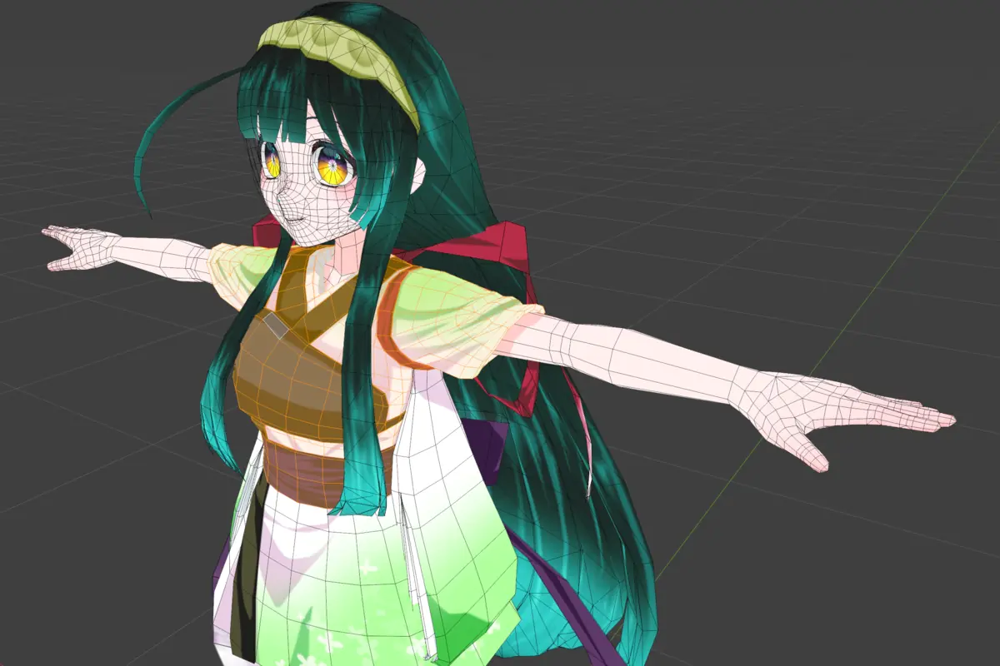
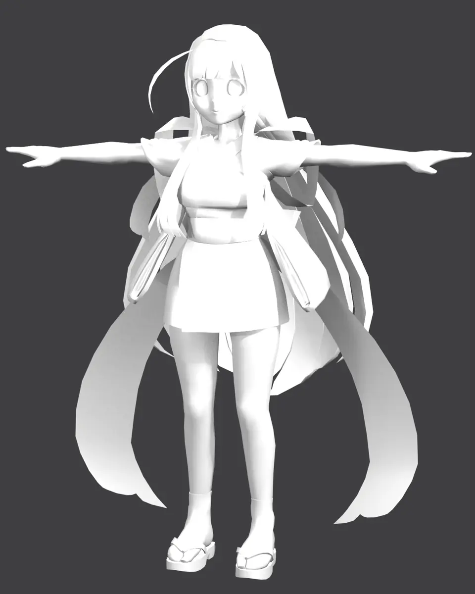
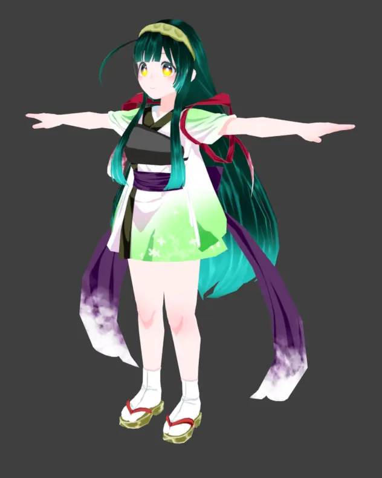
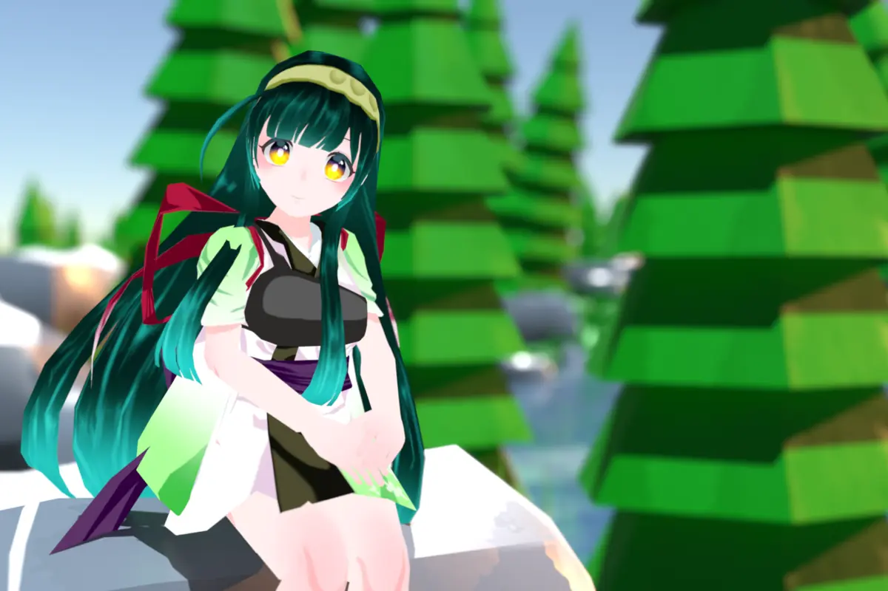

改変の前に、形をじっくり確認
衣装やアクセサリーのメッシュを編集モードで開いて、形や網目の細かさを確かめられます。Unity を開かずに、改変の前の下見ができます。
BOOTH などで手に入れた※ .unitypackage を、Blender にドラッグ＆ドロップするだけ。Unity を開かなくても、ボーンや表情（シェイプキー）はそのまま、lilToon や Poiyomi の見た目に近い状態で読み込めます。
※ Blender での利用や改変の可否は、アセットごとの利用規約に従ってください。


FBX だけ読み込むと このアドオンならその手間、ドロップ 1 回で終わります
.unitypackage を Blender にボーン、表情、テクスチャ、マテリアルがまとめて入ります。素体と衣装のように、複数のパッケージを一度にドロップすることもできます。

衣装やアクセサリーのメッシュを編集モードで開いて、形や網目の細かさを確かめられます。Unity を開かずに、改変の前の下見ができます。

ポーズを付けて EEVEE でレンダリングすれば、告知画像やサムネイル、SNS 用の 1 枚絵に。トゥーンの見た目のまま撮れます。

Standard や URP のマテリアルは Blender の標準的なシェーダーに変換します。Unity 向けの家具や小物も、Blender のシーン作りに使えます。
改変や画像の公開ができるかどうかは、アセットごとの利用規約に従ってください。
上記以外のシェーダーも、一般的な設定名から可能な範囲で変換します。モデル形式は FBX / OBJ / glTF / VRM / Collada に対応しています。
lilToon などのトゥーン系は EEVEE 向けのトゥーンの見た目で、Standard や URP は Blender 標準の Principled BSDF で読み込みます。Cycles でレンダリングしたくなったら、あとからサイドバーで切り替えられます。元のパッケージは要りません。
ほかに、ライティングの影響を受けない Unlit と、名前だけの空マテリアルを作るモードもあります。

Blender 4.2 以降に対応しています。どちらの入れ方でも、使える機能は同じです。
ダウンロードした zip を Blender のウィンドウにドラッグ＆ドロップすると、インストールの確認が出ます。プリファレンスの「エクステンション入手」右上のメニューにある「ディスクからインストール」からも入れられます。
Blender で 編集 > プリファレンス > エクステンション入手 > リポジトリ を開き、+ から リモートリポジトリを追加 を選んで、この URL を貼り付けます。
{{BASE_URL}}/index.json
あとは「エクステンション入手」で Unity Package Importer を検索して、インストールします。
.unitypackage を 3D ビューポートにドラッグ＆ドロップするか、ファイル > インポート > Unity Package を選びます。ポップアップで Import を押せば読み込みが始まります。複数のファイルを一度にドロップしても大丈夫です。


いいえ。Unity も Unity Hub もインストールしなくて大丈夫です。パッケージの中身はアドオンが直接読み取ります。
無料です。GPL-3.0 のフリーソフトウェアで、ソースコードも GitHub で公開しています。
Blender 4.2 以降です。Windows / macOS / Linux で動きます。
lilToon、Poiyomi、MToon など、よく使われるシェーダーのアバターに対応しています。それ以外のシェーダーも、一般的な設定名から可能な範囲で変換します。
Unity のシェーダーと Blender のノードは仕組みが違うため、見た目は完全には一致しません。仕上げは Blender 側で調整してください。
また、技術的に読み込めても、Blender での利用や改変ができるかどうかはアセットごとの利用規約で決まります。規約を確認し、その範囲で使ってください。
このアドオンはファイルを読み込むための道具で、アセットの使い方を許可するものではありません。改変や画像・動画の公開、Unity 以外での利用ができるかどうかは、アセットごとの利用規約で決まります。購入したショップのページや同梱の規約を確認してから使ってください。
目的は「Blender で正しく見えるモデル」なので、次のものは読み込みません。
パッケージ内のスクリプトは一切実行しません。ディスクに書き出すのはモデルと、マテリアルが使うテクスチャだけです。同梱の .blend は Python を含められるため、インポートのたびに自分で有効にしない限り開きません。ファイルのパスや展開サイズも、書き出す前に確認します。
FBX や画像の読み込みは Blender 自身が行うので、Blender は最新の LTS を使ってください。詳しくは README（日本語）にあります。
サイドバー（N キー）の「Unity Package」タブに、読み込んだ内容、マテリアルごとの結果、警告が表示されます。それでも解決しないときは、GitHub の Issues で知らせてください。
仕組みや細かい仕様は、開発者向けの DESIGN.md にまとめています。